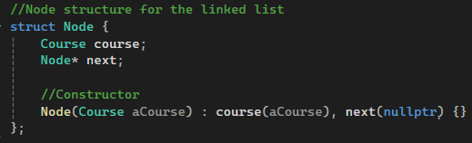
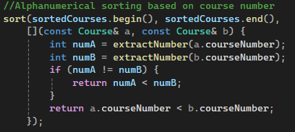
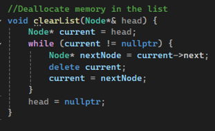
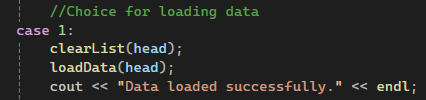
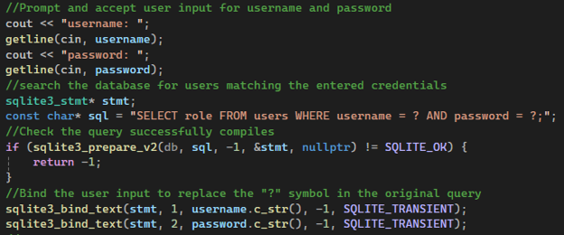
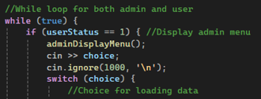
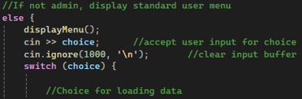
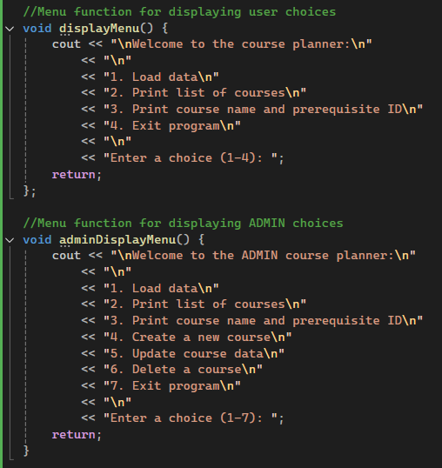
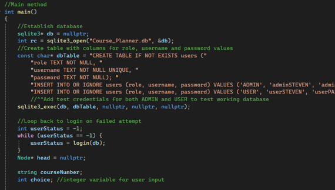

SNHU | CS 499 ePortfolio
The Computer Science program at Southern New Hampshire University has helped me cultivate a strong foundation of both technical engineering skills and professional knowledge. My thought process and methodology surrounding problem solving has improved greatly, expanding to new areas that I didn’t know were possible. This experience has prepared me to enter professional employment equipped with industry-standard best practices and a keen awareness of my societal impact and responsibility.
Throughout the program I had the pleasure of learning various programming languages through hands on projects including a text-based room traversal game in Python, a full-stack website using HTML for booking vacations, a hardware thermostat built with a Raspberry Pi Module combined with Python code, inventory management program using Java, reverse engineering C++ source code to assembly, and many others. The development of this ePortfolio has allowed me to reflect on my growth and contrast how I approach problems in a thoughtful and engineering focused mindset compared to earlier in the program.
An exciting aspect that I believe will lend itself well to future success in the industry is the capstone requiring enhancements to be identified and performed on previously created projects. This transforms the point of view from creating a program to solve a simple problem, to brainstorming how you can improve upon it while maintaining and hopefully exceeding the functionality. When working on a professional team, it is often that you will be working on code that others have started or contributed to. Therefore, it is crucial to understand how to uphold industry standards and effectively protect the work of others. Similarly, others will be working within the code that I create such that crafting well-documented and clear communication is a necessity to maintain team focus, trajectory and security.
I practiced effective stakeholder communication within CS 300 Analysis and Design revolving around an application’s user interface and user experience. First, I conducted research to determine components and features to include in the design that best met user needs. Then, I conducted interviews to further gain knowledge of what users are looking for and how they would like to see these needs met. I finally drafted mock illustrations and designs for how the application would look and function, and created a full presentation addressed to the client for how the software company I work for would address these requirements. This demonstrated effective written, illustrated and verbal communications sufficient for engineering team members as well as clients and stakeholders.
Throughout the Computer Science program we learned various data structures, how to implement them, and how to balance trade-off. This balance is a skill that is important because it could be different for each employer, developer, and project. Understanding potential trade-offs of the avenue you choose to pursue could have unintended consequences further into production. Not only did I demonstrate skills for developing unordered_map structures but also node-based linked lists. This reflects an ability to logically analyze trade-off, as the unordered_map performs quicker, but the linked list allowed me to demonstrate a variety of skills including overhauling the structure of an existing program and memory allocation.
Database integration has become an industry standard practice, and a well-crafted understanding of this process is essential for successful software engineering. The course planner includes SQLite database integration for storing login credentials and allows for proper authentication. Another major component for successful programming is managing the system in a way that fosters future enhancement and debugging. I demonstrated this important lesson by refactoring the code in the Android studio application by separating the front-end and back-end related functions into separate classes. For example, the homepage class would handle the display data while the controller class handled the logic and calculations, effectively practicing separation of concerns.
Creating software programs that uphold security standards is a growing complication and concern. Everyday individuals with bad motives are finding new ways to surpass the current level of security. If we as programmers do not continue advancing to identify vulnerabilities and anticipate attacks, sensitive data could be easily compromised leading to significant consequences for the company, shareholders, and customers. I have learned in this program that security should be a priority at every stage of the software development lifecycle and included in the overall architecture from the beginning to best allocate sparse resources. Two examples from my ePortfolio are the implementation of prepared statements in the course planner to avoid SQL injection, as well as role authentication to allow different permissions for an admin compared to a standard user.
To fully display my achievements and skills in Computer Science – Software Engineering, I have chosen two artifacts to perform enhancements across the above mentioned three categories. The first artifact, originally developed for CS 360 Mobile Architect and Programming, is a weight-loss tracking application created with Android Studio and written in Java. A user can create an account, login, set a goal and track their progress. The enhancement performed on this application demonstrates refactoring architecture to enhance efficiency, allow for easier debugging and flow, as well as practice separation of concerns by dedicating functions across classes. By creating individual controller classes to handle login logic and another for weight calculations, the login and homepage are solely for display and input detection.
The second artifact was used to complete enhancements for both categories two and three. This artifact is a Course Planner program written in C++, originally developed for CS 300 Analysis and Design. The purpose of the program is to allow a user to load and view course data. The first enhancement takes the simple unordered_map data structure and updates it to a complex, node-based linked list structure. This demonstrates effective pointer traversal, node placement, memory management, and deallocation. Moreover, the program includes strong sorting functions for an alphanumerical list.
The third and final enhancement was also completed on the Course Planner C++ program. This time, to satisfy the database requirement, I added a new login feature combined with an SQLite database for authenticating a user and determining their role, whether a standard user or an admin. If the user is an admin, additional CRUD (Create, Read, Update, Delete) operations become available. I successfully demonstrated database integration, data manipulation, and security vulnerability prevention by including prepared statements to avoid potential SQL injections.
These enhanced artifacts reflect my well-rounded understanding and technical skills in Computer Science, demonstrating my dedication and readiness to excel in the technology industry.
Code review
The code review below is a step-by-step analysis of the weight-loss tracking application that I built in Android studio. Here, I demonstrate my UI/UX design ability, as well as identifying the areas that would later be enhanced. An effective code review is crucial to understanding the fundamentals, architecture and communication of a program and its relative components. Both code reviews effectively demonstrate the course outcome for designing, developing, and delivering professional-quality oral, written, and visual communications.
Download the ENHANCED source code
Download the ORIGINAL source code
This weight loss tracking application, originally developed for CS 360 – Mobile Architect and Programming, is designed to allow a user to login to their account or register if no previous account was created. Once authenticated, a homepage is presented that shows the current weight (if entered) as well as an option for adding a new entry, viewing current progress represented in the progress bar, and setting a new goal. Additionally, a calendar button is provided to access the calendar grid showing all previous weight entries and the date that they were entered. Finally, upon setting a new goal, the user is presented with an option to turn SMS notifications on or off. If turned on, the user will receive a notification when the goal has been met.


This artifact demonstrates my ability to code in Java, as well as create a functional user interface. The greater demonstration of skills is the ability to join these two components to form a seamless flow for a user to interact. Furthermore, category one is titled “Software Engineering and Design” which presented a great opportunity to enhance this application’s architecture. In its original state, the application had login and homepage classes that were handling all the user interface mechanics including buttons and display, as well as the math calculations and logic. Creating two new controller classes to take over the calculations demonstrates an ability to not only enhance an existing application but to think differently about how a program functions. I demonstrated the ability to create a cohesive project that handles various elements, methods and classes that all work together.
The biggest challenge was linking all the java files and correcting the communication once the enhancements were made. By creating these additional classes to handle the calculations and fixing the error in the current weight calculation, this overhauled the architecture allowing stronger communication among the components. I learned that sometimes there may be a method that works best for one area, but not for another. Therefore, it is important to understand how to strike a balance that works best for the overall program or application. This enhancement fully satisfies the course outcome to design and evaluate computing solutions that solve a given problem using algorithmic principles and computer science practices while managing trade-offs. Additionally, this demonstrates an ability to use well-founded and innovative techniques, skills, and tools in computing practices.


This code above highlights the restructuring of the architecture by using the home page to capture input data and send the processing of logic and calculations to the weight controller. This demonstrates a good practice of “separation of concerns” allowing each component to function most efficiently.
Code review
The code review below is a walkthrough of the source code for a course planner program written in C++. This program demonstrates strengths in code data structures and databases, as well as strategically enhances a simple program to one that is more complex. Code reviews are an important practice for computer science professionals because it is an effective way of identifying errors, finding solutions, and cultivating improvements.

Download the ENHANCED source code
Download the ORIGINAL source code
I chose to perform the second enhancement on the Course Planner C++ program that was originally made for CS 300 Analysis and Design. This program presents the user with a menu to load data from a course list file, and once loaded, print a list of all courses, print a specific course, or exit the program. The program parses each line of the file loaded and stores the Course ID, name and prerequisites. The second category is titled “Algorithms and Data Structures”, I decided to enhance this artifact by upgrading the simple unordered_map to a node based linked list. This demonstrates my ability to work with different data structures, as well as modify existing project architecture while not compromising the original functionality.



The source code screenshots present a node structure to establish a new node to hold a single course’s information. Then, incorporate pointers to connect all the nodes in a chain, so that the program can then start from the beginning to search for specific data or print in alphanumerical order. Additionally, I included a crucial element to the overall system architecture that deallocates memory in the list. Without this “clearList” function, each time a user selected to load data, the original data would remain in the memory. This data builds up and could result in memory leaks. This could slow the memory and eventually crash the program. By calling clearList(head), we are clearing out the data before loading new data.



This enhancement required an ability to identify an area for improvement of data structures and design, then build and finalize the improvements. The course outcomes satisfied with this enhancement, specifically identifying and upgrading the unordered_map to a linked list, include demonstrating an ability to use well-founded and innovative techniques, skills, and tools in computing practices for the purpose of implementing computer solutions, as well as the outcome for designing and evaluating computing solutions that solve a given problem using algorithmic principles. Finally, the program excels to accomplish designing, developing, and delivering professional-quality oral, written, and visual communications by adhering to well crafted comments and readability within the source code.
Enhancement three continued progress on the Course Planner C++ program that was created for CS 300 Analysis and Design. For the category of databases, I chose to implement a fully functional login method that connects to an SQLite database to authenticate a user to determine if they are an admin or a standard user. If authenticated as an admin, additional CRUD (Create, Read, Update, Delete) features become accessible.


Adding these enhancements, I demonstrate the ability to create a complex structure for authenticating a user that requires different functionality based on role. In addition to verifying and authenticating credentials, I also added security methods for preventing SQL injection. The prepared statement ensures that an SQL injection is not passed into the program and read as a command. The SQLite database integration takes the simple program that only loads and displays data from a file, into a much more complex system, reflecting successful software engineering methods and practices, as well as the course outcome for developing a security mindset that anticipates adversarial exploits to expose and prevent potential vulnerabilities.

While the database requirement was satisfied with the SQLite database integration along with the login authentication, I wanted to push myself to see if I could complete the additional element of CRUD for an admin user. This ended up being the most difficult aspect as the main method required a lot of tweaking and trial and error to get fully functional. There were many small details that had to be corrected for the flow between the while loops for admins versus a standard user. I was able to get it semi-functional pretty quickly, but the specific positioning of “cin >> choice”, and return values required a lot of testing, going through the program with each option for both user and admin to ensure each option worked as it should, as well as returned the appropriate menu or response.



The source code below reflects part of the main method that creates a table to format the role, username, and password, while allowing an admin to add an entirely new course entry, update existing values, or delete an entry. Additionally, I added mock credentials for testing functions under each user role.



As this enhancement completes the three major components, I believe that I have successfully met the course outcomes, combining software engineering principles for code architecture and programming design, secure coding, data structures and finally database integration. The course planner program satisfies the course outcome of building collaborative environments as demonstrated by the role authentication and CRUD features. Across my three enhancements, I demonstrate a well-rounded and logical approach to successfully completing programming projects across an array of project types.